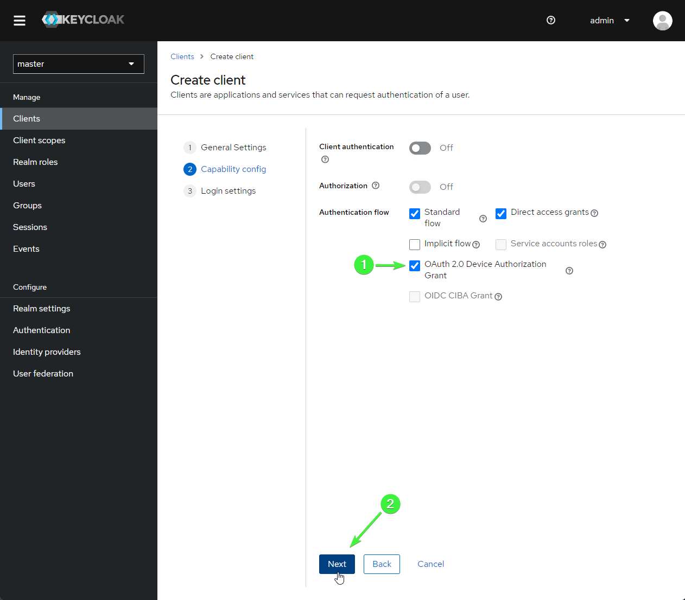
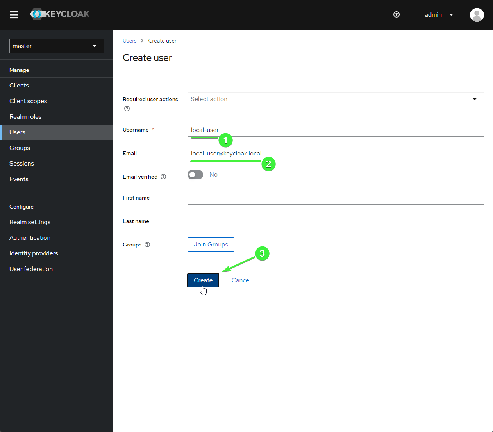

Getting started with Keycloak
This step-by-step walk-through will show you how to get your Keycloak server set up to work with the minimal example. For this tutorial, I am running Keycloak locally with Docker.
You will need:
- Docker installed (or an existing Keycloak server)
- Python 3.8+ installed
Installing python packages
The first thing you will need to do is to install some neeeded python dependencies. In
order to run the example API, you will need the the uvicorn package installed. You
will also be using the Armasec CLI to verify that you can log in. For this, you will
need the armasec package with the cli extra. For this tutorial, it will be best to
work in a new virtual environment. To bootstrap it, run the following commands:
When the commands finish running, your environment will be ready to complete this guide.
Start your Keycloak server
If you want to try the example locally without an existing Keycloak server, you will need to start a new one. Docker is the easiest way to get Keycloak up and running. To start the Keycloak server in Docker, run the following command:
docker run -p 8080:8080 -e KEYCLOAK_ADMIN="admin" -e KEYCLOAK_ADMIN_PASSWORD="admin" keycloak/keycloak:22.0.5 start-dev
This will start a new Keycloak server with an admin UI available at localhost:8080.
A new admin user will automatically be created with the password "admin".
Open a browser and load the address localhost:8080. Then, click on the "Administration
Console" to log in.
Log-in to admin console
The sign-in credentials for the admin account are:
| Field | Value |
|---|---|
| Username | admin |
| Password | admin |
After you log in, the UI will automatically load the "Master" realm.
Set up your "Master" realm
First, you should change the lifespan for tokens. By default they expire after 1 minute, but that's not so friendly for a tutorial, so you should lengthen the lifespan to 15 minutes.
Click on the "Realm settings" section in the side-nav, and then go to the "Tokens" tab. Find the "Access Token Lifespan" setting, and change it to 15 minutes.
 Realm settings
Realm settings
Click "Save" at the bottom after you change the value. All of the rest of the settings can be left as they are.
Set up a client
You will need a client that is configured for the tutorial. To do this, navigate to the "Clients" tab in the nav bar and click the "Create client" button in the "Clients list" tab:
 Create the client
Create the client
A creation wizard will load starting with the "General Settings" tab. For this tutorial, use the name "armasec_tutorial". Click the "Next" button to go on to the next page.
Name the client
In the "Capability config" page, select the "OAuth 2.0 Device Authorization Grant" setting. This will be needed to log in via the Armasec CLI later. Click the "Next" button to go on to the next page.
 Device auth
Finally, in the "Login settings" page, put "*" in the "Valid redirect URIs" setting. Click the "Save" button to finish creating the new client.
Redirect URIs
Once the new client is created, you will be redirected to the "Client details" page.
This tutorial demonstrates how to set up role-based access on an API endpoint. So, the next step is to create a role that the API will require users to have in order to access an endpoint.
Click on the "Roles" tab of the "Client Details" page, and then click the "Create role" button.
 Create Role
Create Role
The name is not important as long as it matches on your API endpoint. For this tutorial, name the role "read:stuff" and then click the "Save" button.
 Name Role
Name Role
The final step for our new client is to set up an "Audience" mapper to set the audience claim in the token that our example app will check for.
Navigate back to the "Client details" for our "armasec_tutorial" client and open the "Client scopes" tab. To add a new mapper for our client, click the link for "armasec_tutorial-dedicated" scope.
 Client Scopes
Client Scopes
The "Mappers" tab will load by default. Click the "Configure a new mapper" button.
Configure Mapper
Select the "Audience" mapper from the list that is shown.
 Select Audience
Select Audience
The "Add mapper" form will be loaded next. In this form, name the mapper "Audience" and set the "Included Custom Audience" field to "http://keycloak.local". Make sure "Add to ID token" is selected. Finally, click "Save" to finish adding the new mapper.
 Mapper Settings
Mapper Settings
The last step in configuring keycloak is setting up a user that will be accessing the protected endpoint.
Navigate to the "Users" section using the side-nav and click the "Add user" button to get started.
Add User
In the "Create user" form that is opened next, name your user "local-user" and provide a fake email address like "local-user@keycloak.local". Click "Create" to create the new user.
 Create User
Next, we need to assign the user a password that they will use to log in. Open the "Credentials" tab in the "User details" page for your new user. Click the "Set password" button.
Set Password
In the form that opens, use "local" for the password (and confirmation). Make sure to turn off the "Temporary" flag so that the user will not have to change their password in this tutoria. Then, click the "Save" button to finish setting up the user credentials.
Save Password
Next, we need to add the "read:stuff" role that we created before to your new user. Open the "Role mapping" tab in the "User details" page for your new user. Click the "Assign role" button.
Assign Role
In the "Assign roles to local-user" dialog that opens, click the drop down that shows "Filter by realm roles" and switch the setting to "Filter by clients". Find the "read:stuff" role that was assigned to the "armasec_tutorial" client, select it, and click the "Assign" button to assign this role to your new user.
Select Role
Now your client should be all set up and ready to go! Log out of the admin portal before you go on so that you are ready to log in with your new user later on in the tutorial.
Start up the example app
Note in this example that the use_https flag must be set to false to allow a local
server using unsecured HTTP.
Also not that we need to add a payload_claim_mapping because Keycloak does not provide
a permissions claim at the top level. This mapping copies the roles found at
resource_access.armasec_tutorial.roles to a top-level attribute of the token payload
called permissions.
Copy the example.py app to a local source file called "example.py".
Start it up with uvicorn:
Once it is up and running, hit <ctrl-z> and type the command bg to put the uvicorn
process into the background. You should make sure to kill the process when you complete
the tutorial.
Login via Armasec CLI
Next, you will log in using the Armasec CLI to get an API token to access your example API. Before you log in, however, you will need to configure the Armasec CLI to connect to your Keycloak server. Type the following command to configure the CLI:
armasec set-config --domain=localhost:8080/realms/master --audience=http://keycloak.local --no-use-https --client-id=armasec_tutorial
Now you should be ready to log in. In your terminal, type the following command to start the process:
The CLI will show a box prompting you to complete the login process in a browser:
╭─────────────────────────────────────────── Waiting for login ───────────────────────────────────────────╮
│ │
│ To complete login, please open the following link in a browser: │
│ │
│ http://localhost:8080/realms/master/device?user_code=TQOL-RIYP │
│ │
│ Waiting up to 6.0 minutes for you to complete the process... │
│ │
╰─────────────────────────────────────────────────────────────────────────────────────────────────────────╯
Waiting for web login... ╸━━━━━━━━━━━━━━━━━━━━━━━━━━━━━━━━━━━━━━━ 2% 0:04:56
Open the provided link in the browser and log in using the "local-user" that you created.
 Log in
Log in
You will then be prompted with a question asking if you want to grant access. Click "Yes" to complete the log in process. The browser will show a message confirming that you are now logged in. You may close that browser tab.
Notice in the terminal, a message is now printed showing that your user was logged in:
╭────────────────────────────────────────────── Logged in! ───────────────────────────────────────────────╮
│ │
│ User was logged in with email 'local-user@keycloak.local' │
│ │
╰─────────────────────────────────────────────────────────────────────────────────────────────────────────╯
Fetch the auth token
Next, you will use the Armasec CLI to fetch the token for the logged in user. To do
this, you will use the show-token subcommand. In a terminal, type (the prefix flag
includes the "Bearer" type indicator for the token):
The Armasec CLI will print out a box showing the auth token for your user:
╭───────────────────────────────────────────── Access Token ──────────────────────────────────────────────╮
│ │
│ Bearer │
│ eyJhbGciOiJSUzI1NiIsInR5cCIgOiAiSldUIiwia2lkIiA6ICJ3dzlNZ0FSNExXbXNuTE9vYTJKTkE4WXZkVUFZX25jZnNvcTU0c3d │
│ kbERzIn0.eyJleHAiOjE3MDA1OTE2OTAsImlhdCI6MTcwMDU5MTYzMCwiYXV0aF90aW1lIjoxNzAwNTkxNjI4LCJqdGkiOiI0ZTNmN2 │
│ U4Ni00ZTJhLTQwZDAtOWQ3ZS0zZTRmYjNkMzk1YWYiLCJpc3MiOiJodHRwOi8vbG9jYWxob3N0OjgwODAvcmVhbG1zL21hc3RlciIsI │
│ mF1ZCI6WyJodHRwOi8va2V5Y2xvYWsubG9jYWwiLCJhY2NvdW50Il0sInN1YiI6IjMxMzY1ZWYyLTZmYjYtNGVhOS04MmE2LWUwMTli │
│ YjYwNmFkOSIsInR5cCI6IkJlYXJlciIsImF6cCI6ImFybWFzZWNfdHV0b3JpYWwiLCJzZXNzaW9uX3N0YXRlIjoiYTc2ZWEzYTEtZGE │
│ 3MC00Mzg2LWFiZTMtZjFjZjYzZDI5ZjZhIiwiYWNyIjoiMSIsInJlYWxtX2FjY2VzcyI6eyJyb2xlcyI6WyJkZWZhdWx0LXJvbGVzLW │
│ 1hc3RlciIsIm9mZmxpbmVfYWNjZXNzIiwidW1hX2F1dGhvcml6YXRpb24iXX0sInJlc291cmNlX2FjY2VzcyI6eyJhcm1hc2VjX3R1d │
│ G9yaWFsIjp7InJvbGVzIjpbInJlYWQ6c3R1ZmYiXX0sImFjY291bnQiOnsicm9sZXMiOlsibWFuYWdlLWFjY291bnQiLCJtYW5hZ2Ut │
│ YWNjb3VudC1saW5rcyIsInZpZXctcHJvZmlsZSJdfX0sInNjb3BlIjoicHJvZmlsZSBlbWFpbCIsInNpZCI6ImE3NmVhM2ExLWRhNzA │
│ tNDM4Ni1hYmUzLWYxY2Y2M2QyOWY2YSIsImVtYWlsX3ZlcmlmaWVkIjpmYWxzZSwicHJlZmVycmVkX3VzZXJuYW1lIjoibG9jYWwtdX │
│ NlciIsImVtYWlsIjoibG9jYWwtdXNlckBrZXljbG9hay5sb2NhbCJ9.ntEA67CNS2ZvPIMac3X-1wKBTiKFS5i5aYo32M7ytVIrnh_X │
│ j_YHLz17WmP3PBKyJtZKgIN8zq_nOF4XeRBMMHSg8ec9ySRNNRia0AkB0AKB-yPa4Q2qGwAFFipWhkP_iQapHj3XWPNDSVRPy8ZvRzb │
│ LDjcgxhvSQE2Yzm68dtiVrcxA-FpImtJRNwARgeXFcvsYjrWfaACLVrvABgi0PiBiqPoFE4-zHEwhVZ3-DfmvXGRj4NxVsOzTyVkzi0 │
│ pfMgHtOzI3MHb_hQ2xAtNBp-Ra5yYXHV3hteb_RPfjVTYADl6fq5Rggi3ydPsJVs0I7GAwzh85P8wRs127dtYv1w │
│ │
╰──────────────────────────────── The output was copied to your clipboard ────────────────────────────────╯
If your terminal supports it, the token will be automatically copied into your clipboard.
However, if you need to manually copy it, you can run the above command again with the
--plain flag to print the token without formatting:
Bearer eyJhbGciOiJSUzI1NiIsInR5cCIgOiAiSldUIiwia2lkIiA6ICJ3dzlNZ0FSNExXbXNuTE9vYTJKTkE4WXZkVUFZX25jZnNvcTU0c3dkbERzIn0.eyJleHAiOjE3MDA1OTE2OTAsImlhdCI6MTcwMDU5MTYzMCwiYXV0aF90aW1lIjoxNzAwNTkxNjI4LCJqdGkiOiI0ZTNmN2U4Ni00ZTJhLTQwZDAtOWQ3ZS0zZTRmYjNkMzk1YWYiLCJpc3MiOiJodHRwOi8vbG9jYWxob3N0OjgwODAvcmVhbG1zL21hc3RlciIsImF1ZCI6WyJodHRwOi8va2V5Y2xvYWsubG9jYWwiLCJhY2NvdW50Il0sInN1YiI6IjMxMzY1ZWYyLTZmYjYtNGVhOS04MmE2LWUwMTliYjYwNmFkOSIsInR5cCI6IkJlYXJlciIsImF6cCI6ImFybWFzZWNfdHV0b3JpYWwiLCJzZXNzaW9uX3N0YXRlIjoiYTc2ZWEzYTEtZGE3MC00Mzg2LWFiZTMtZjFjZjYzZDI5ZjZhIiwiYWNyIjoiMSIsInJlYWxtX2FjY2VzcyI6eyJyb2xlcyI6WyJkZWZhdWx0LXJvbGVzLW1hc3RlciIsIm9mZmxpbmVfYWNjZXNzIiwidW1hX2F1dGhvcml6YXRpb24iXX0sInJlc291cmNlX2FjY2VzcyI6eyJhcm1hc2VjX3R1dG9yaWFsIjp7InJvbGVzIjpbInJlYWQ6c3R1ZmYiXX0sImFjY291bnQiOnsicm9sZXMiOlsibWFuYWdlLWFjY291bnQiLCJtYW5hZ2UtYWNjb3VudC1saW5rcyIsInZpZXctcHJvZmlsZSJdfX0sInNjb3BlIjoicHJvZmlsZSBlbWFpbCIsInNpZCI6ImE3NmVhM2ExLWRhNzAtNDM4Ni1hYmUzLWYxY2Y2M2QyOWY2YSIsImVtYWlsX3ZlcmlmaWVkIjpmYWxzZSwicHJlZmVycmVkX3VzZXJuYW1lIjoibG9jYWwtdXNlciIsImVtYWlsIjoibG9jYWwtdXNlckBrZXljbG9hay5sb2NhbCJ9.ntEA67CNS2ZvPIMac3X-1wKBTiKFS5i5aYo32M7ytVIrnh_Xj_YHLz17WmP3PBKyJtZKgIN8zq_nOF4XeRBMMHSg8ec9ySRNNRia0AkB0AKB-yPa4Q2qGwAFFipWhkP_iQapHj3XWPNDSVRPy8ZvRzbLDjcgxhvSQE2Yzm68dtiVrcxA-FpImtJRNwARgeXFcvsYjrWfaACLVrvABgi0PiBiqPoFE4-zHEwhVZ3-DfmvXGRj4NxVsOzTyVkzi0pfMgHtOzI3MHb_hQ2xAtNBp-Ra5yYXHV3hteb_RPfjVTYADl6fq5Rggi3ydPsJVs0I7GAwzh85P8wRs127dtYv1w
Keep the token close at hand; you will be using it shortly to access your API endpoint.
Try it out
Open a browser to localhost:8000/docs
 Swagger
Swagger
This will show you the auto-generated swagger docs for the example API app. Click on the
Authorize button to add the token you copied to the clipboard in the header of requests to the
API.
 Authorize
Authorize
First, paste the token (including the "Bearer" prefix) from the clipboard into the form
and click the Authorize button in the dialog, click Close to dismiss the dialog.
Now, all subsequent calls to the API will include a header that looks like:
Now, expand the "GET" REST operation on the /stuff endpoint and click Try it out.
 Try it out
Try it out
Finally, click Execute to issue the request to the API.
Execute
You should see a response that includes a 200 status code and a response body that includes:
Congratulations! You are now using Armasec and Auth0 to authorize requests to your API.
Tinker
Now, there are a few things you can do to check out how things work. Try the following things:
- Remove the "read:stuff" role from your user and try another request
- Try a request without being authorized in swagger
- Try making requests using
curlor thehttpxlibrary in IPython
Send feedback
If the above tutorial didn't work as expected, a step needs better clarification, or you have some questions about it, please create an issue on Armasec's GitHub's issues.